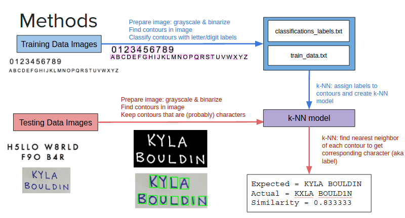

“Don't sweat the petty things and don't pet the sweaty things”
– George Carlin
Mixed Reality is the future. With the success of Pokemon Go, our team comprising of Danny Flax,Viral Patel and Ben Stammen and me created a virtual set where one can physically interact with the virtual elements on the chessboard. A product created after 24 hours of intense coding, project management and coffee addiction, our team secured top position among over 750 students and 200+ teams. For more information, visit my Github page.
My contribution was taking the responsibility as a Project Manager for the team. Starting off with brainstorming ideas before the competition with team members, finalizing on an idea after analyzing the pros and cons of each, preparing with installation of proper packages, IDE's on everyone's machines. During the competition, my responsibility included designing hardware component to interact with virtual objects, leading standup meetings, deciding strategy based on time limitation, keeping team members inspired and motivated, creating presentation for judges, demonstrating project to judges as well as the audience.
As a part of Computer Vision for Human Computer Interaction class, our team made project to recognize charcters from an image. The team comprised of Edrienne Co, Kyla Bouldin and myself. We created a training data set that was trained with standardized fonts as well as different handwritings. We also created custom functions based on our requirements. We then had a testing data set that was used to measure the accuracy of the program.
My role was to design custom functions that sorted contours from left-right and top-bottom. I used the concept of moment of contours along with tolerance level for achieving the designated goal. Another task was to handle issues involving tittles (small dots on lowercase letters 'i' and 'j'). Our program detected tittles to be separate characters and my role was to orevent that from happening.
Leader of 94-member team representing our University, we completed 99 tasks that focused on 18 of the most ignored social and ecological problems, such as Holistic Development of Child, Sustainability, Human Rights and Healthful Living. After 3 months of hard-work, sleepless nights and sincere efforts, our team managed to win the competition out of over 180 universities. Being awarded a special recognition by CRY (Child Rights and YOU) for excellent leadership qualities was just the beginning.
This project involved a team of four students working to create a scaled transport AEV which focused on energy management, operational efficiency and operational consistency. The goal of the AEV was to successfully pick up the cargo that consisted of baby dinosaurs and deliver it to the desired destination avoiding all the obstacles. The track layout was pre-determined which is shown below.
Through intensive team work and time management, our team was able to create a successful AEV. The tasks were divided into four categories which involved building of the AEV, Data Recording, Data Analysing and Programming. I was the programmer and was responsible to effectively code the microcontroller for the project. Our team went a step further to create a video of the vehicle. The Critical Design Report which includes the programming and energy analysis as well as the Video can be found below.
Critical Design ReportScilab Textbook Companion project is managed by the FOSSEE project, IIT Bombay. During the internship, I coded the book ‘Elements of Mechanical Engineering’ by N.M Bhatt and J.R Mehta. Over 200 examples were successfully transferred in the Scilab language code. I was given a time frame of 3 months to complete the codes but I managed to finish it in less than two months. The details about the internship can be found through the flowchart attached below. The book was officially published on June 13, 2014. The electronic copy can be found below.
PublicationA calculator that is able to work with very large numbers and is able to compute complex calculations. This was a result of my Software-I class at The Ohio State University during my very first semester. A screenshot of the final product is shown below: